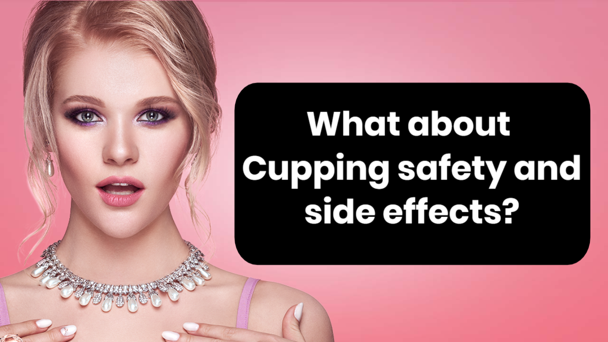

What exactly is cupping Therapy, and why should anyone attempt it?
by Boxnfly
Posted on 25-06-2021 01:43 AM

Who Isn't a Fine Fit for Cupping Therapy?
Peak Physiotherapy and Performance offers cupping therapy to patients suffering from a range of diseases. This Therapy is also utilized in our maintenance programs to alleviate muscular pain and provide fresh blood to the treated region.
Cupping therapy can also relieve pain in the back, neck, shoulder, elbow, and knee. Remember that cupping continuously improves pain relief and assists you in doing what you like as quickly as possible.
The Rivernorth Acupuncture Clinic provided this information in Diamond Bar. On their website, you may discover the same material in a different format or more data.
When the world witnessed Michael Phelps's enormous purple bruises covering his back and shoulders at the 2016 Rio Olympics, everyone questioned where they came from. Following this, there was a lot of interest in Cupping Therapy, which is considered to help alleviate pain, muscle stiffness, and other symptoms. Standard treatment techniques assist more than just Olympic athletes.
The dark red markings on Olympic athletes' shoulders and backs are not the result of cigar burns. They're not precisely spherical hickeys, either. Nevertheless, fans watching the Olympics this weekend may have spotted contestants with pepperoni-like bruises and wondered, "What is that?"
Olympic competitors utilized cupping in Rio. An ancient method is still used throughout the Middle East and Asia, most notably in China and Korea.
Aside from the discomfort, this Therapy may be helpful if you have anxiety, fibromyalgia, insomnia, or chronic pain. In addition, if you have post-injury damage, a slow colon, or surgical adhesions, cupping therapy may be beneficial.
Assume you want to reduce your weight as well. In that case, you might use this Therapy to get rid of the extra cellulite on your body. Those wanting to reduce weight, on the other hand, should be aware that cupping treatment must be combined with a rigorous diet in order to be effective.
When Was Cupping Therapy Recognized as a Medical Treatment?

Massage (also known as cupping treatment or suction therapy) gained news during the Rio Olympics in 2016 when great swimmers, including multiple gold medalists Michael Phelps, emerged with odd marks all over their bodies.
The marks were circular and dark purple. They looked to be bruises on the back, shoulders, thighs, and calves. Was it only a rash? What kind of illness is it? We quickly understood it was neither.
Cupping therapy has been practiced for hundreds of years by Eastern and Middle Eastern civilizations. Nonetheless, Westerners have only lately become aware of the old medicinal practices used among athletes, among others, due to widespread cultural events such as the televised Olympics.
As the name indicates, Cupping is the placement of several cups over sensitive areas of the body. The practitioner creates suction by lighting a fire inside the cup to warm it before laying it on the patient's skin to cool it down.
Cupping treatment is an old Chinese medicine technique that promotes healthy circulation and healing by breaking up skin stagnation and congestion. Cupping therapy has risen in popularity in recent years, particularly among top swimmers and track and field athletes.
Cupping therapy for the back and face is provided at a premium spa. A fresh take on a tried-and-true approach.
Cupping is a 3,000-year-old healing technique that was made lawful in China in the 1950s. On the body, little glass cups or bamboo jars are put.
What Is the Goal of Cupping Therapy?

The practitioner uses the cupping method to offer a massage here. It is achieved by applying oil to the skin before inserting the cup, allowing the cup to glide smoothly over the application zone.
Cupping techniques can be utilized on the back, hips, abdomen, and thighs. After a vigorous cupping massage, the skin will turn red, suggesting that circulation has been restored.
Every medical/therapeutic procedure involves some amount of risk. However, when done correctly, Cupping Therapy is relatively cheap.
I would always recommend that you get expert Cupping or other types of Therapy. The section that follows discusses possible or anticipated adverse effects.
What exactly is cupping Therapy, and why should anyone attempt it?
At first look, it appears to be painful. But, on the other hand, Cupping has been done in Egypt, China, and Greece for thousands of years. It then expanded to Africa and Europe before gaining popularity among Americans.
Sixty minutes of fire cupping costs $80, three packages cost $200, and six packages cost $400. This one-of-a-kind treatment includes Cupping, crystal therapy, Auriculouritherapy, aromatherapy, and sound healing.
Fire Cupping therapy is pouring a tiny flame from a cotton swab into a glass cup for a few seconds before applying it directly to the skin. Suction is created by heat, which pulls out inflammation and toxins while simultaneously strengthening the immune system.
It also circulates blood and stimulates circulation, both of which are beneficial to the heart and spleen. Cupping therapy may also aid in removing moisture from the lungs, which may aid in the treatment of a cold, cough, or influenza.
Cupping Therapy Suggestions

After you've done an internet search for "capping treatment near me" and schedule your first appointment, you'll want to know how to prepare for your office visit.
When you call Rivernorth Clinic in Diamond Bar, CA, our staff will provide you with basic instructions and guidance over the phone. In addition, to confirm that you are a qualified applicant, we may ask you a series of health-related questions.
If you have specific medical records, we may request them. This is done to ensure that you receive the best possible treatment.
Cupping therapy for myofascial pain is a centuries-old treatment based on traditional Asian medicine.
Cupping therapy is now offered in your office to assist you in removing scar tissue and fascial adhesions, managing trigger points, improving circulation, relieving pain, and promoting mobility.
Cupping may also be helpful in various therapeutic circumstances as part of a program designed to enhance functional outcomes. Through lectures and video demonstrations, students will learn about the benefits of cupping methods and how to employ specialized manual treatment equipment to enhance functional outcomes with quantifiable results.
On This Page
Brought To You By: